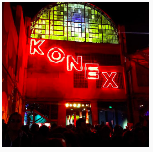
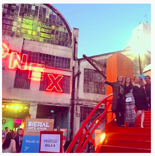
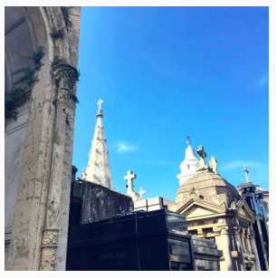
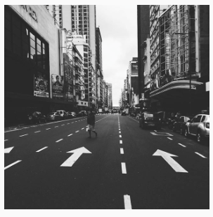
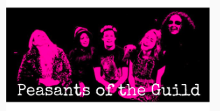

ACTING
I began college in September of 2012. After 4 years I am finally graduating May. Here I'd like to share some pictures of my biggest projects. After graduating I am moving to California. I want to be part of a theater ensemble and do some programming on the side!
The International Performing Ensemble program allowed me to travel to Sibiu, Romania to perform Bury The Dead. I also had the opportunity to travel with my ensemble Peasants of the Guild to Argentina. We made a crowfunding camoaign and raised 2,000 dollars. Lastly, we are working on our last IPE show. It will be during the first week of March. Stay tuned!!




PROGRAMING
Another thing I love is programming. When I was bored I used to create webpages. One summer when I was 13 years old, I spent the entire break learning about HTML, and CSS. It has been years since I last wrote code. It's fun and I want to get back at it. I wish I had some of my old projects to show you!